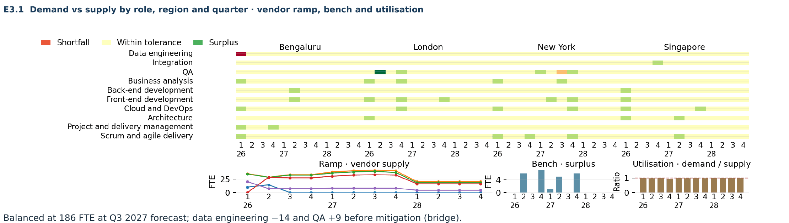
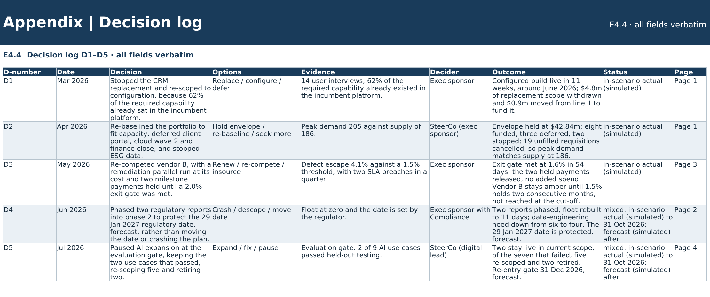

Enterprise transformation delivery review
Delivery case study – personal prototype
Simulated data – not observed results. The firm, people and vendors are generic and unnamed. Decisions D1–D5 are the decisions the pack forces, presented as such; figures marked forecast are projections.
- Scenario
- A four-page review pack that ends in decisions: portfolio, governance, vendor workforce and commercial exposure, on simulated data.
- As at
- 31 Oct 2026
- Outputs
- 8-tab model, 7-page PDF
- Checks
- 37 TRUE; 1,284 printed figures traced.
1. What the pack covers
Cover
Portfolio
- E1.1 Portfolio register · $m
- E1.2 Roadmap and shared data-engineering capacity
- E1.3 Deferrals and stops · D1 CRM stop rationale · reason, re-entry trigger, date
Governance
- E2.1 Three workstreams · 14 milestones · critical path and float
- E2.2 DACI · six decisions
- E2.3 Top-five RAID · contingency and escalation
Vendor workforce
- E3.1 Demand vs supply by role, region and quarter · vendor ramp, bench and utilisation
- E3.2 A-to-D transition and continuity
- E3.3 Scorecard and Vendor B checkpoints
- E3.4 Vendor spend by year · $m; funded; share
Is it working
- E4.1 Benefits register · run-budget effects outside the $42.84m envelope
- E4.2 Self-service funnel by business unit · as at 31 Oct 2026
- E4.3 Delivery health · value, thresholds and escalation
- E4.4 Decision log D1–D5 – full log on page 7 (appendix)
Cadence
- Accountability and monthly measures
Appendix – decision log
- E4.4 Decision log D1–D5 · all fields verbatim
2. Decisions the pack forces
| D-number | Date | Decision | Decider (role) | Outcome |
|---|---|---|---|---|
| D1 | Mar 2026 | Stopped the CRM replacement and re-scoped to configuration, because 62% of the required capability already sat in the incumbent platform. | Exec sponsor | Configured build live in 11 weeks, around June 2026; $4.8m of replacement scope withdrawn and $0.9m moved from line 1 to fund it. |
| D2 | Apr 2026 | Re-baselined the portfolio to fit capacity: deferred client portal, cloud wave 2 and finance close, and stopped ESG data. | SteerCo (exec sponsor) | Envelope held at $42.84m; eight funded, three deferred, two stopped; 19 unfilled requisitions cancelled, so peak demand matches supply at 186. |
| D3 | May 2026 | Re-competed vendor B, with a remediation parallel run at its cost and two milestone payments held until a 2.0% exit gate was met. | Exec sponsor | Exit gate met at 1.6% in 54 days; the two held payments released, no added spend. Vendor B stays amber until 1.5% holds two consecutive months, not reached at the cut-off. |
| D4 | Jun 2026 | Phased two regulatory reports into phase 2 to protect the 29 Jan 2027 regulatory date, forecast, rather than moving the date or crashing the plan. | Exec sponsor with Compliance | Two reports phased; float rebuilt to 11 days; data-engineering need down from six to four. The 29 Jan 2027 date is protected, forecast. |
| D5 | Jul 2026 | Paused AI expansion at the evaluation gate, keeping the two use cases that passed, re-scoping five and retiring two. | SteerCo (digital lead) | Two stay live in current scope; of the seven that failed, five re-scoped and two retired. Re-entry gate 31 Dec 2026, forecast. |
3. Exhibits



4. How the numbers hold
Inputs only from generator/params.yaml (each entry has a basis) and generator/kakali_text.yaml (own-words text, loaded verbatim); live formulas; ALL CHECKS block: 37 TRUE. PDF figures read from recalculated cells. Trace CSV rows: 1,284.